เปิดหน้า Labels ของ repo
เปิดหน้านี้ ↗
- กด New label เพื่อสร้าง label ใหม่ ตอนนี้ยังไม่มี
story,taskและepic(มีแค่bug)
คู่มือแบบภาพ 32 ขั้น ภาพทุกภาพถ่ายจากหน้าจอ GitHub จริงของ Project เงินไปไหน – Dev เมื่อ 28 ต.ค. 2569 เลขในวงกลมแดงในภาพตรงกับเลขในคำอธิบายใต้ภาพ
| Jira | GitHub | หมายเหตุ |
|---|---|---|
| Project / Board | Project | Project เดียวดึง issue จากหลาย repo ได้ |
| Epic | Parent issue + sub-issues | issue แม่แสดงความคืบหน้าของ sub-issue ให้เอง |
| Story / Task / Bug | Issue + label + template | Issue types ของจริงมีเฉพาะ repo ใน organization |
| Story points | ฟิลด์ Story point (Number) | template ตั้งชื่อว่า Estimate เปลี่ยนชื่อได้ แต่ต้องเป็น Number ถึงจะรวมแต้มได้ |
| Sprint | ฟิลด์ Iteration | template ตั้งไว้ sprint ละ 2 สัปดาห์ |
| Backlog | view ตารางที่กรอง no:iteration | |
| Sprint board | view Board กรอง iteration:@current | |
| Fix version | Milestone | |
| Component | Label | |
| Burndown | Insights → Burn up | ไม่มี burndown ในตัว ใช้ burn up แทน (ขั้นที่ 25–32) |
ทำครั้งเดียว ก่อนเริ่มสร้าง issue
story, task และ epic (มีแค่ bug)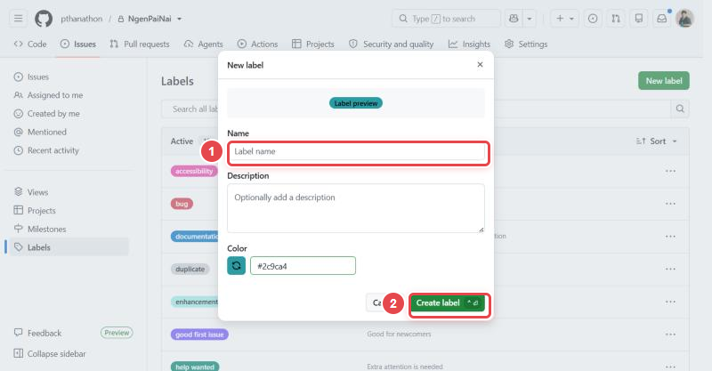
storytask และ epicissue template ของ repo นี้ติด label ให้อัตโนมัติ แต่จะติดได้ก็ต่อเมื่อ label นั้นมีอยู่แล้ว
template ทำให้ทุกคนกรอก issue ในรูปแบบเดียวกัน มี 2 วิธี: ผ่านหน้าเว็บ ง่ายแต่ได้แค่ข้อความตั้งต้น หรือ เขียนไฟล์ YAML ได้ฟอร์มที่มีช่องบังคับกรอกและ dropdown (repo นี้ใช้วิธีที่ 2)

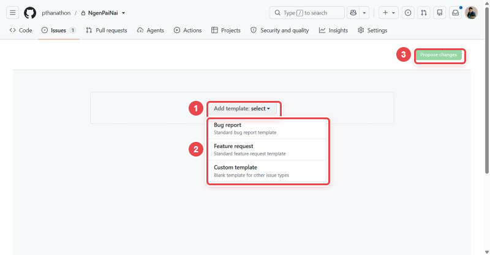
.md ลงโฟลเดอร์ .github/ISSUE_TEMPLATE/ ให้
วิธีนี้ได้แค่ข้อความตั้งต้นให้แก้ต่อ บังคับให้กรอกช่องไหนไม่ได้ ถ้าอยากได้ฟอร์มจริงให้ใช้วิธีที่ 2
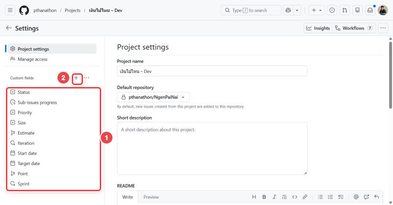
.github/ISSUE_TEMPLATE/ ของ repo.yml หนึ่งไฟล์คือ template หนึ่งแบบ ส่วน config.yml ใช้ตั้งค่าหน้าเลือก template เช่น อนุญาตให้สร้าง issue เปล่าได้ไหม.yml หรือสร้างในเครื่องแล้ว push ก็ได้

name ชื่อในหน้าเลือก template, description, title ชื่อ issue ตั้งต้น และ labels ที่จะติดให้อัตโนมัติprojects: ใส่ ["pthanathon/22"] แล้ว issue ใหม่จะเข้า Project เอง (repo นี้ปิดไว้ เพราะ workflow Auto-add ทำให้อยู่แล้ว)body: รายการช่องในฟอร์ม แต่ละช่องมี type (textarea, input, dropdown, checkboxes, markdown) และ required: true บังคับให้กรอกname: User story
description: ฟีเจอร์จากมุมมองผู้ใช้
title: "[Story] "
labels: ["story"]
body:
- type: textarea
id: story
attributes:
label: User story
placeholder: ในฐานะ… ฉันอยาก… เพื่อ…
validations:
required: true
- type: dropdown
id: points
attributes:
label: Story points
options: ["1", "2", "3", "5", "8", "13"]ดูตัวอย่างเต็มได้ในไฟล์ .github/ISSUE_TEMPLATE/user_story.yml ของ repo นี้ ส่วนช่องทั้งหมดที่ใช้ได้ดูที่ GitHub Docs หัวข้อ "Syntax for issue forms"
เทียบได้กับปุ่ม Create ใน Jira ตัวอย่างในขั้นนี้คือ Epic C ของจริงใน repo (#5–#8)
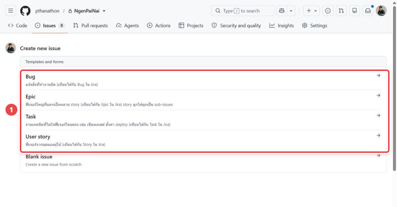
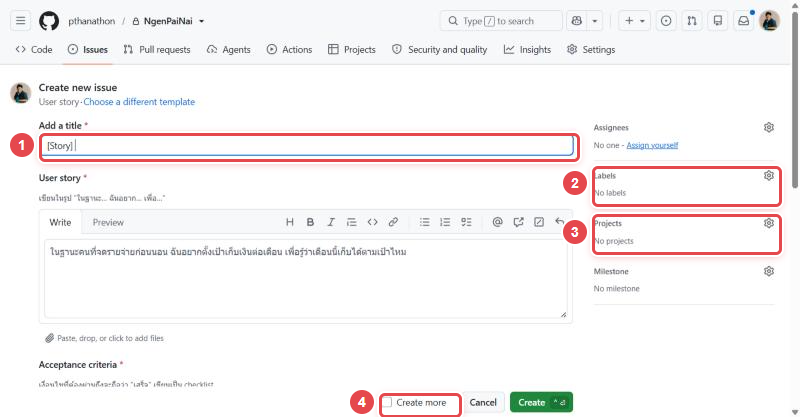
[Story] แล้วกรอก user story กับ acceptance criteria ด้านล่าง acceptance criteria ต้องเป็นข้อที่ตอบได้ว่าผ่านหรือไม่ผ่าน ดูตัวอย่างใน #6story ให้เองช่อง Story points ในฟอร์มเป็นแค่ข้อความในเนื้อ issue ค่าที่ใช้คำนวณจริงคือฟิลด์ Story point ใน Project ซึ่งต้องใส่เองอีกครั้ง

Epic ไม่ต้องใส่ Story point เพราะแต้มของ epic คือผลรวมของ story ลูก ถ้าใส่ซ้ำจะนับแต้มเกิน
Project นี้สร้างจาก template "Team planning" ฟิลด์และ view ส่วนใหญ่จึงมีให้แล้ว
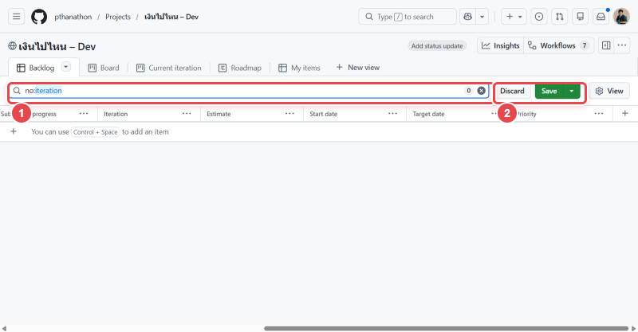

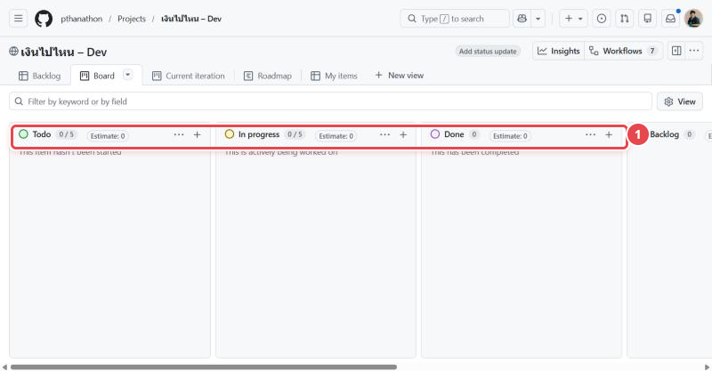


ใช้ filter กับ view จัดงาน
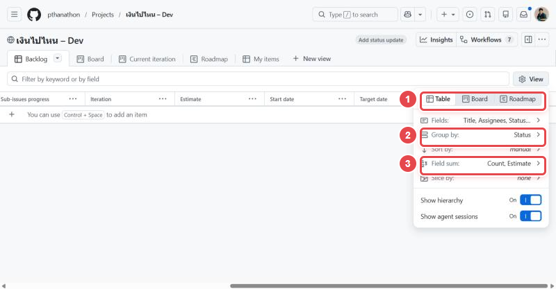
no:iteration จะเหลือเฉพาะงานที่ยังไม่อยู่ใน sprint ไหน นี่คือ product backlog| filter | ได้อะไร |
|---|---|
no:iteration | งานที่ยังไม่อยู่ใน sprint (product backlog) |
iteration:@current | งานใน sprint ปัจจุบัน |
iteration:@next | งานที่วางไว้ sprint หน้า |
-status:Done | ซ่อนงานที่เสร็จแล้ว |
label:story | เฉพาะ story |
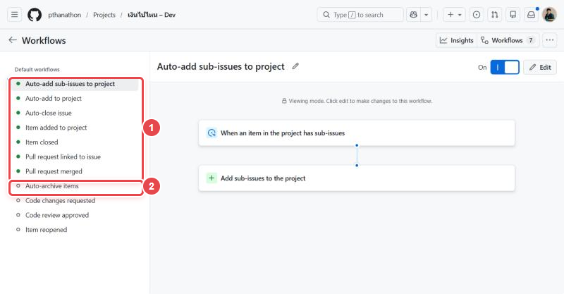
ตอนวางแผน sprint ให้ใช้ view ที่ปิด Show hierarchy ไม่อย่างนั้นแต้มรวมจะต่ำกว่าความจริง ตรวจเมื่อ 28 ต.ค. 2569
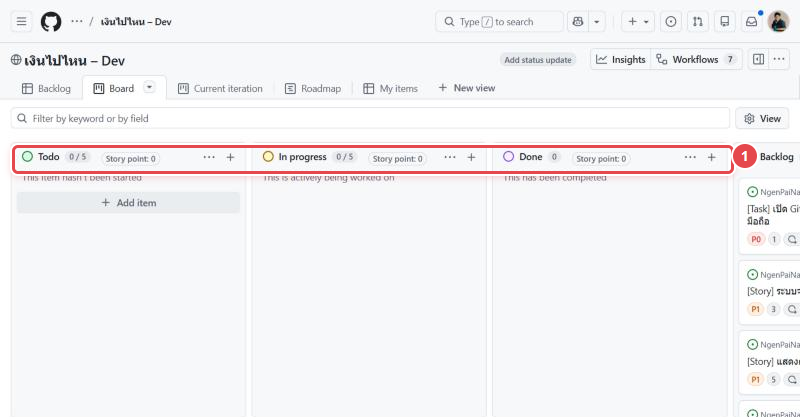
iteration:@current จะเห็นเฉพาะงานใน sprint นี้ให้การ์ดย้ายสถานะเองเมื่อปิด issue หรือ merge PR


is:issue is:open)label:story,task,bugGitHub ไม่มี burndown ในตัว แต่ตั้งกราฟ Burn up ให้นับแต้มของ sprint ปัจจุบันแล้วอ่านส่วนงานค้างแทนได้
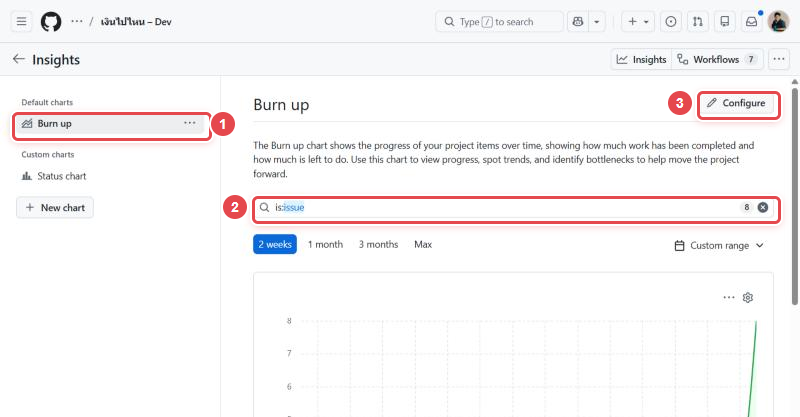
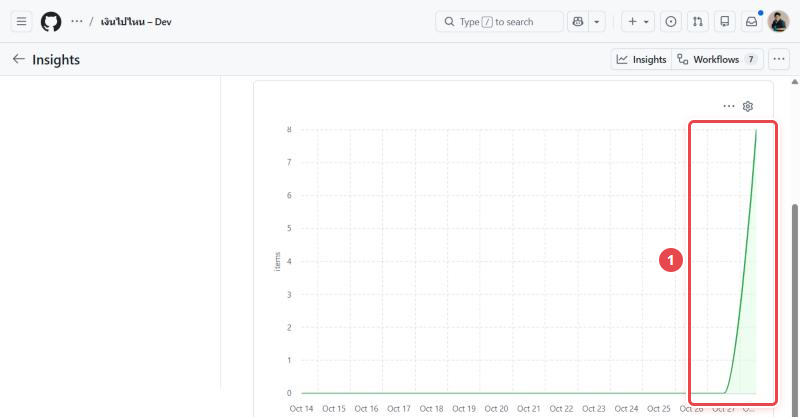
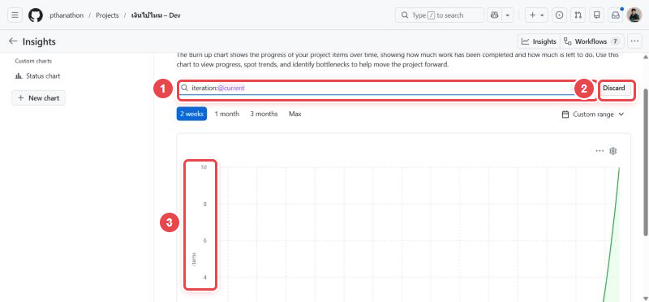
iteration:@current ในช่อง filter แล้วกด Enter เลข 3 ท้ายช่องคือ sprint นี้มี 3 ใบ (ใช้ iteration:"Iteration 1" ถ้าอยากดู sprint ที่ระบุชื่อ)@current เลื่อนไป sprint ถัดไปเองเมื่อเปลี่ยนรอบ กราฟที่บันทึกไว้จึงใช้ได้ทุก sprint ไม่ต้องสร้างใหม่
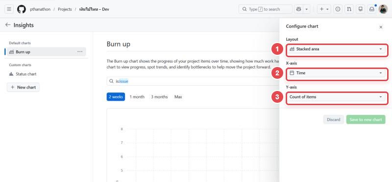
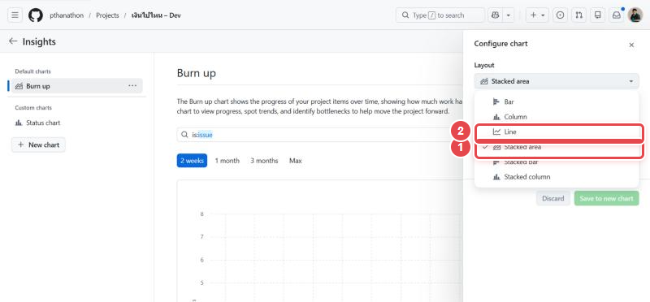
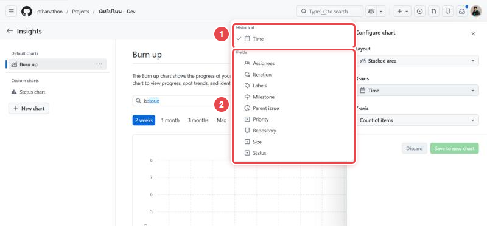
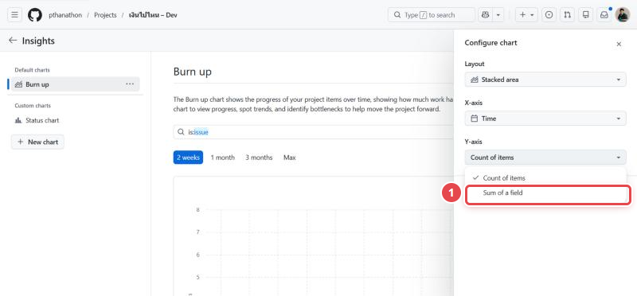
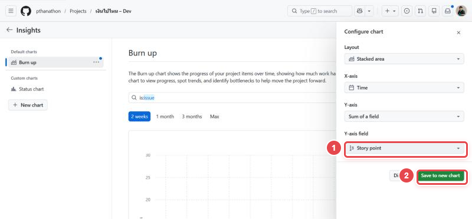
กราฟ velocity (แต้มที่ทำเสร็จต่อ sprint): กด + New chart → Configure ตั้ง Layout = Stacked column, X-axis = Iteration, Group by = Status, Y-axis = Sum of a field → Story point แท่งส่วน Done ของแต่ละ sprint คือ velocity ใช้ประมาณว่า sprint หน้ารับงานได้กี่แต้ม
อ่านกราฟเป็น burndown: ดูส่วน Open ซึ่งคือแต้มที่ยังค้างอยู่ ควรลดลงจนเหลือ 0 ในวันสุดท้ายของ sprint แต่งานจะนับว่าเสร็จก็ต่อเมื่อ issue ถูกปิด (workflow Auto-close issue ปิดให้เมื่อย้ายการ์ดไป Done) และ GitHub ไม่มีเส้นอุดมคติให้ ต้องเทียบในใจว่าควรลดลงวันละเท่าไร
ใส่ในฟิลด์ Story point เป็นตัวเลขบอกขนาดงานเมื่อเทียบกับงานอื่น ไม่ใช่จำนวนชั่วโมง ชุด 1, 2, 3, 5, 8, 13 (Fibonacci แบบดัดแปลง) ห่างกันขึ้นเรื่อยๆ เพราะงานยิ่งใหญ่ยิ่งประเมินไม่แม่น
| แต้ม | ความหมาย | ตัวอย่างจาก backlog |
|---|---|---|
| 1 | งานเล็กมาก รู้ชัดว่าต้องทำอะไร | B1 เปิด GitHub Pages |
| 2 | งานเล็ก | B2 เพิ่ม manifest กับไอคอน |
| 3 | งานกลาง ตรงไปตรงมา | A1 ตั้งเป้าเก็บเงินในเมนู |
| 5 | งานกลาง มีหลายส่วน | A2 แสดงความคืบหน้าเป้าในหน้าแรก |
| 8 | งานใหญ่ หรือยังมีจุดที่ไม่แน่ใจ | C3 เพิ่มหรือแก้หมวดเองได้ |
| 13 | ใหญ่เกินไป ควรแตกเป็นหลาย story ก่อน | – |
Epic คือกลุ่มงานตามเรื่อง ส่วน Sprint คือช่วงเวลา ตัวอักษร A, B, C ไม่ได้แปลว่าต้องทำตามลำดับ ใน sprint เดียวมี story จากหลาย epic ปนกันได้ และ epic หนึ่งใช้หลาย sprint ได้ การเลือก story เข้า sprint เรียงตาม Priority ไม่ได้เรียงตาม epic
| Sprint 1 | Sprint 2 | Sprint 3 | |
|---|---|---|---|
| Epic A เป้าเก็บเงิน | A1 | A2 | A3 |
| Epic B ใช้บนมือถือ | B1, B4, B2 | B3 | |
| Epic C จดเร็วขึ้น | C1 | C2, C3 | |
| Epic D คุณภาพโค้ด | D1 | D2 |
อ่านตามแนวนอน (epic) จะเห็นว่าแต่ละเรื่องคืบหน้าแค่ไหน อ่านตามแนวตั้ง (sprint) จะเห็นว่ารอบนั้นทำอะไรบ้าง ใน GitHub: epic คือ issue แม่ที่มี sub-issues ส่วน sprint คือค่าในฟิลด์ Iteration ของแต่ละ story
งานจริงของแอปนี้ เลขในวงเล็บคือ issue ที่สร้างไว้แล้วใน repo สร้างเป็น issue ตามขั้นที่ 9–10 ทำเสร็จแล้วปิดได้จริง กราฟจะได้มีข้อมูล
Epic A: เป้าเก็บเงิน
| # | ชนิด | ชื่อ | Story point | Priority |
|---|---|---|---|---|
| A1 | Story | ตั้งเป้าเก็บเงินต่อเดือนในเมนู ⋯ (#1) | 3 | P1 |
| A2 | Story | แสดงความคืบหน้าเป้าเก็บเงินในหน้าแรก (#2) | 5 | P1 |
| A3 | Story | สรุปท้ายเดือนว่าเก็บได้ตามเป้าไหม (#3) | 2 | P2 |
Epic B: ใช้บนมือถือเหมือนแอปจริง
| # | ชนิด | ชื่อ | Story point | Priority |
|---|---|---|---|---|
| B1 | Task | เปิด GitHub Pages ให้แอปมีลิงก์เข้าใช้จากมือถือ (#4) | 1 | P0 |
| B2 | Story | เพิ่ม web app manifest และไอคอน | 2 | P1 |
| B3 | Story | ใช้งานออฟไลน์ด้วย service worker | 5 | P2 |
| B4 | Bug | ตรวจว่าคีย์บอร์ดมือถือบังปุ่ม "บันทึก" หรือไม่ | 2 | P0 |
Epic C: จดเร็วขึ้น (#5)
| # | ชนิด | ชื่อ | Story point | Priority |
|---|---|---|---|---|
| C1 | Story | ปุ่มรายการที่จดบ่อย แตะครั้งเดียวจดได้ (#6) | 5 | P1 |
| C2 | Story | ค้นหารายการจากบันทึกช่วยจำ (#7) | 3 | P2 |
| C3 | Story | เพิ่มหรือแก้ชื่อหมวดเองได้ (#8) | 8 | P2 |
Epic D: คุณภาพโค้ด
| # | ชนิด | ชื่อ | Story point | Priority |
|---|---|---|---|---|
| D1 | Task | unit test ให้ parseAmount และการคำนวณงบ | 3 | P1 |
| D2 | Task | GitHub Actions รันเทสต์ทุกครั้งที่ push | 2 | P2 |
รวม 12 งาน 41 แต้ม ตัวอย่าง sprint แรก (2 สัปดาห์): B1 + B4 + A1 + B2 + D1 = 11 แต้ม
Closes #12) และการ์ดย้ายไป Done เองควรลองกับ organization จริงของทีมก่อนตัดสินใจด้วย เพราะบางฟีเจอร์ เช่น issue types และจำนวน workflow ขึ้นกับแผนที่ทีมใช้